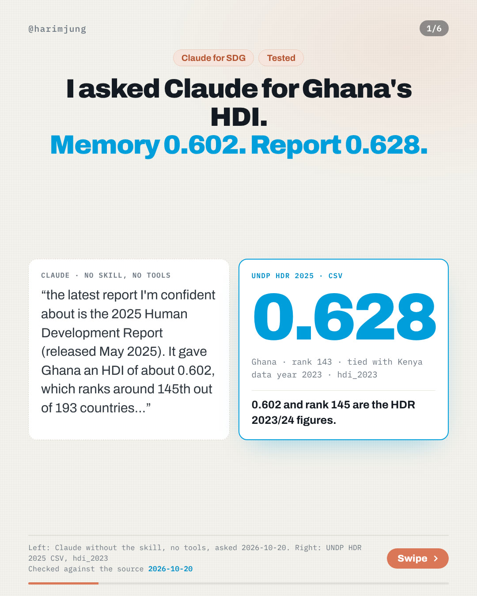
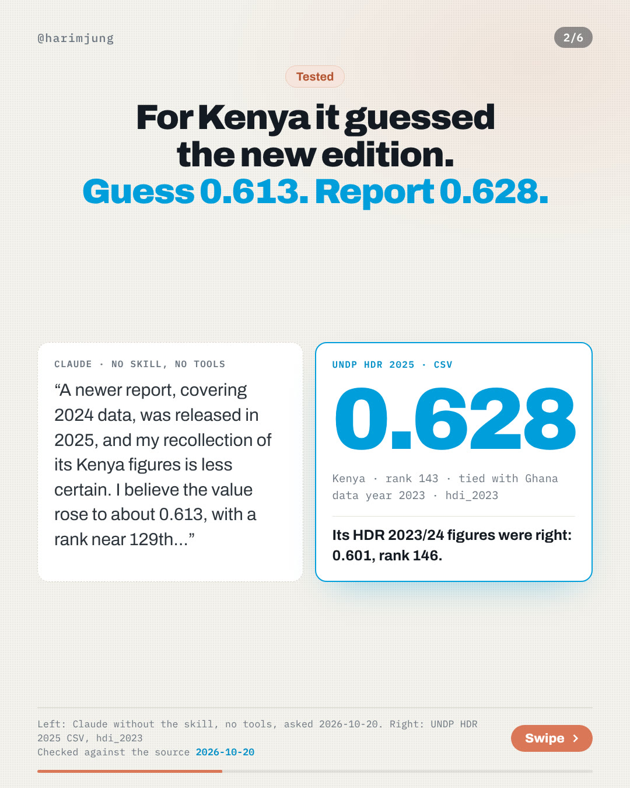
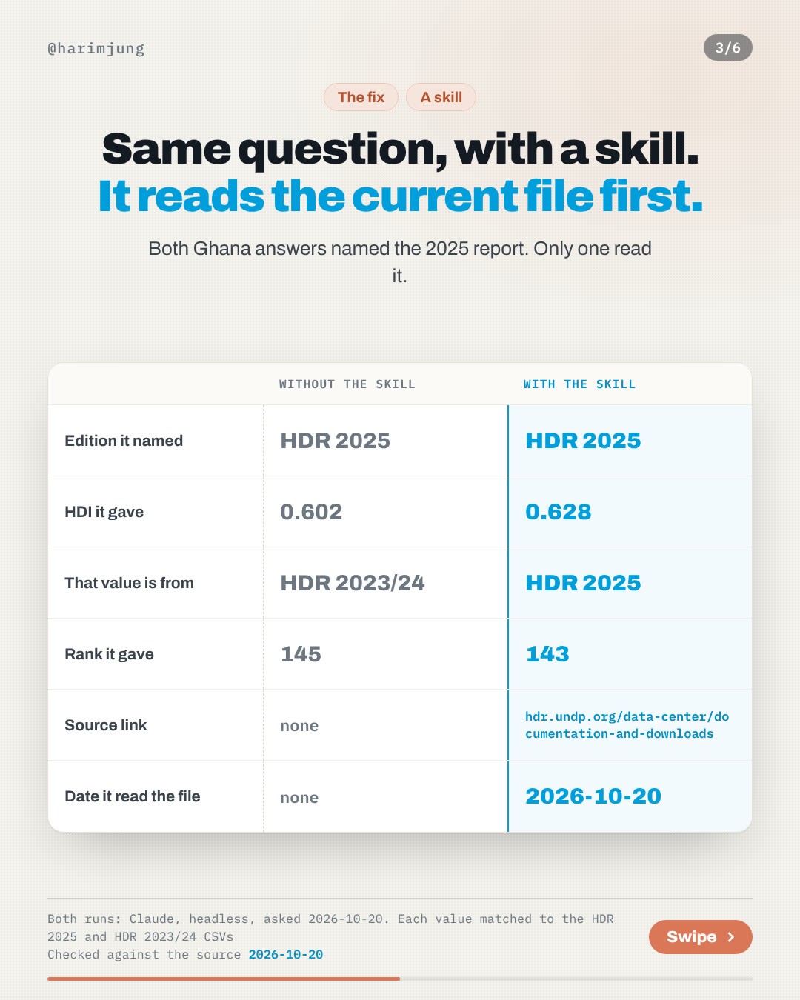
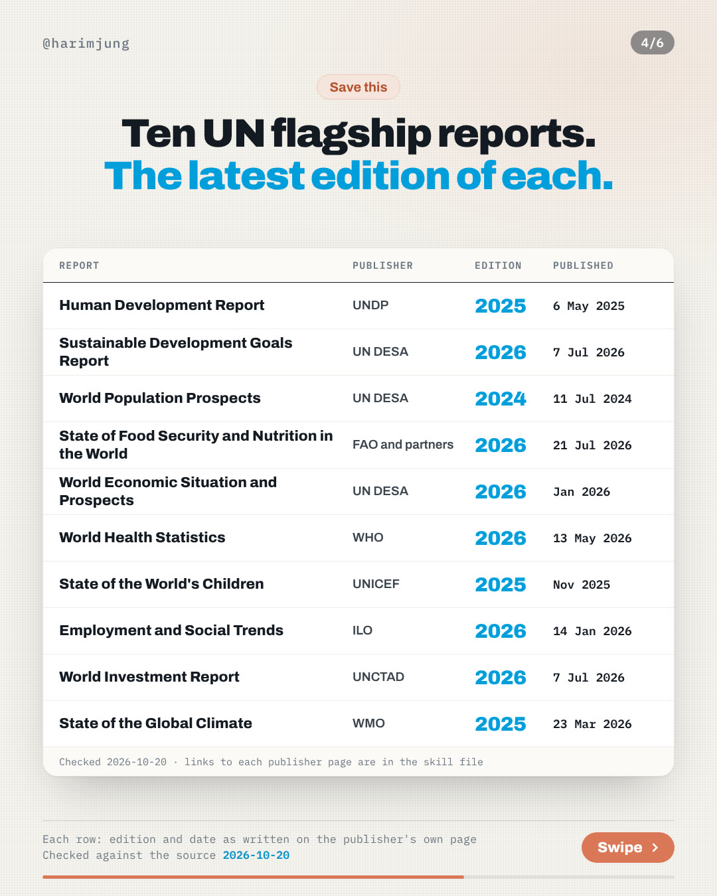
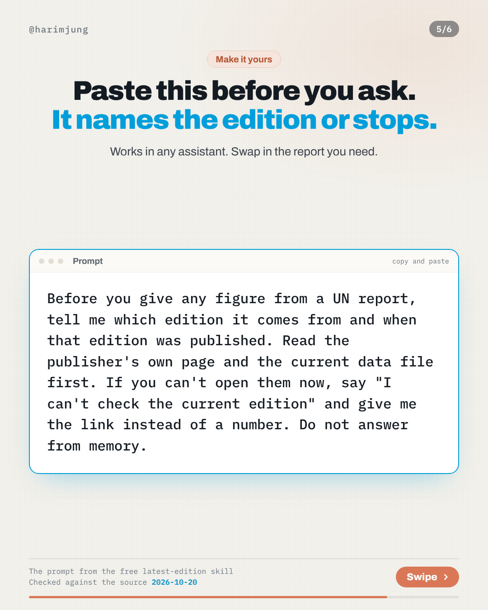
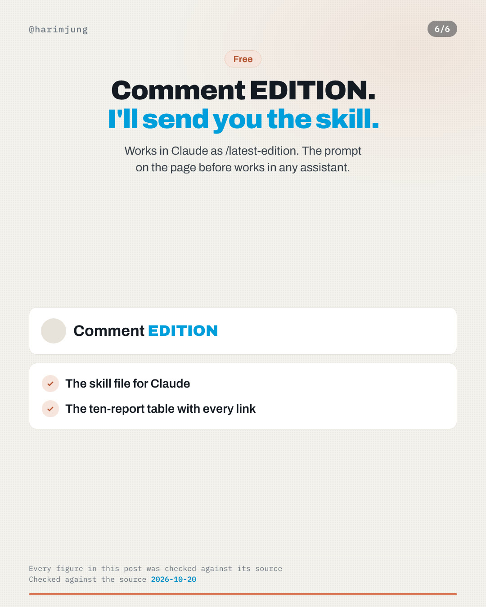

I asked Claude for Ghana's HDI. Memory 0.602. Report 0.628.






What Claude said, with and without the skill
Two questions with no tools and no skill, then the Ghana question again with the latest-edition skill. Each answer is shown word for word. The verdict compares the value in the answer with the current UNDP file. The other five questions from the same session are in the test log.
Without the skill, no tools
What is Ghana's latest Human Development Index (HDI) value and rank in the UNDP Human Development Report? Answer in at most three sentences.
As far as I know, the latest report I'm confident about is the 2025 Human Development Report (released May 2025). It gave Ghana an HDI of about 0.602, which ranks around 145th out of 193 countries and puts Ghana in the medium human development category. I can't confirm whether a newer edition has come out, and I'm quoting these figures from memory, so check them against the UNDP website.
HDR 2025 CSV: 0.628, rank 143. 0.602 is the HDR 2023/24 valueWhat is Kenya's latest Human Development Index (HDI) value and rank in the UNDP Human Development Report? Answer in at most three sentences.
Kenya's HDI value was 0.601 in the 2023/2024 Human Development Report (released in March 2024), ranking it 146th out of 193 countries and territories and placing it in the "medium human development" category. A newer report, covering 2024 data, was released in 2025, and my recollection of its Kenya figures is less certain. I believe the value rose to about 0.613, with a rank near 129th, but please check the UNDP's Human Development Reports website to confirm.
HDR 2025 CSV: 0.628, rank 143. 0.601 is the HDR 2023/24 value. 0.613 is in neither fileWith the latest-edition skill
What is Ghana's latest Human Development Index (HDI) value and rank in the UNDP Human Development Report? Answer in at most three sentences.
Ghana's HDI in the latest edition, the UNDP Human Development Report 2025, is **0.628**, which puts it at **rank 143** and in the Medium human development group. I read both figures from `HDR25_Composite_indices_complete_time_series.csv` (row GHA, columns `hdi_2023` and `hdi_rank_2023`), which is the file linked from UNDP's downloads page. The page I read doesn't state a publication date, so I can't give one; the report's cover image is filed under 2025-05, but that isn't a stated date. Source: https://hdr.undp.org/data-center/documentation-and-downloads · read 2026-10-20.
HDR 2025 CSV: 0.628, rank 143. Same value in the answerSame question, with a skill. It reads the current file first.
Both Ghana answers named the 2025 report. Only one read it.
| Without the skill | With the skill | |
|---|---|---|
| Edition it named | HDR 2025 | HDR 2025 |
| HDI it gave | 0.602 | 0.628 |
| That value is from | HDR 2023/24 | HDR 2025 |
| Rank it gave | 145 | 143 |
| Source link | none | hdr.undp.org/data-center/documentation-and-downloads |
| Date it read the file | none | 2026-10-20 |
Both runs: Claude, headless, asked 2026-10-20. Each value matched to the HDR 2025 and HDR 2023/24 CSVs.
HDI in eight countries. Ghana and Kenya tie at 143.
Each value is one cell of the UNDP file for that edition. Each edition recomputes past years, so quote one edition at a time. The HDR 2025 file gives Ghana 0.625 for 2022. The HDR 2023/24 file gave 0.602 for the same year.
| Country | HDR 2025 · 2023 data | Rank | HDR 2023/24 · 2022 data | Rank |
|---|---|---|---|---|
| Ghana | 0.628 | 143 | 0.602 | 145 |
| Kenya | 0.628 | 143 | 0.601 | 146 |
| Uganda | 0.582 | 157 | 0.550 | 159 |
| Rwanda | 0.578 | 159 | 0.548 | 161 |
| Nigeria | 0.560 | 164 | 0.548 | 161 |
| Tanzania (United Republic of) | 0.555 | 165 | 0.532 | 167 |
| Senegal | 0.530 | 169 | 0.517 | 169 |
| Ethiopia | 0.497 | 180 | 0.492 | 176 |
Files: HDR 2025 composite indices CSV and HDR 2023/24 composite indices CSV, both read 2026-10-20.
Ten UN flagship reports. The latest edition of each.
A row is kept only when the edition label and the date appear word for word in a sentence on the publisher's own page. The proof under each report is that sentence, copied from the page.
| Report and proof | Publisher | Edition | Published |
|---|---|---|---|
Human Development Report
| UNDP | 2025 | 6 May 2025 |
Sustainable Development Goals Report
| UN DESA | 2026 | 7 Jul 2026 |
| World Population Prospects | UN DESA | 2024 | 11 Jul 2024 |
State of Food Security and Nutrition in the World
| FAO and partners | 2026 | 21 Jul 2026 |
World Economic Situation and Prospects
| UN DESA | 2026 | Jan 2026 |
World Health Statistics
| WHO | 2026 | 13 May 2026 |
State of the World's Children
| UNICEF | 2025 | Nov 2025 |
| Employment and Social Trends | ILO | 2026 | 14 Jan 2026 |
World Investment Report
| UNCTAD | 2026 | 7 Jul 2026 |
State of the Global Climate
| WMO | 2025 | 23 Mar 2026 |
Left out because the edition and the date could not both be read on the publisher's page: Emissions Gap Report (UNEP) and Global Trends (UNHCR).
Paste this before you ask.
Works in any assistant. Swap in the report you need.
Before you give any figure from a UN report, tell me which edition it comes from and when that edition was published. Read the publisher's own page and the current data file first. If you can't open them now, say "I can't check the current edition" and give me the link instead of a number. Do not answer from memory.
One chart, and a vertical cut
The eight-country chart as a single image and the same slides at full phone height. Free to repost with the source line.

Where every number comes from
- HDI values and ranks: UNDP HDR 2025 composite indices CSV (2023 data) and UNDP HDR 2023/24 composite indices CSV (2022 data), both read 2026-10-20
- Report editions and dates: the publisher's own page for each report, linked in the table above, checked 2026-10-20
- Claude's answers: recorded word for word on 2026-10-20. The no-skill runs had no tools and no skill. The with-skill run had the latest-edition skill and could read web pages. All of them are in the test log
Ask for a report figure, get the edition
The latest-edition skill behind this week is free. It opens the publisher's page and the current file before it answers. Type /latest-edition Human Development Report, HDI for Ghana in Claude. No comment needed.
Get next week's test
A method post every Tuesday and one chart from UN data every Thursday. Free, and you can leave any time.